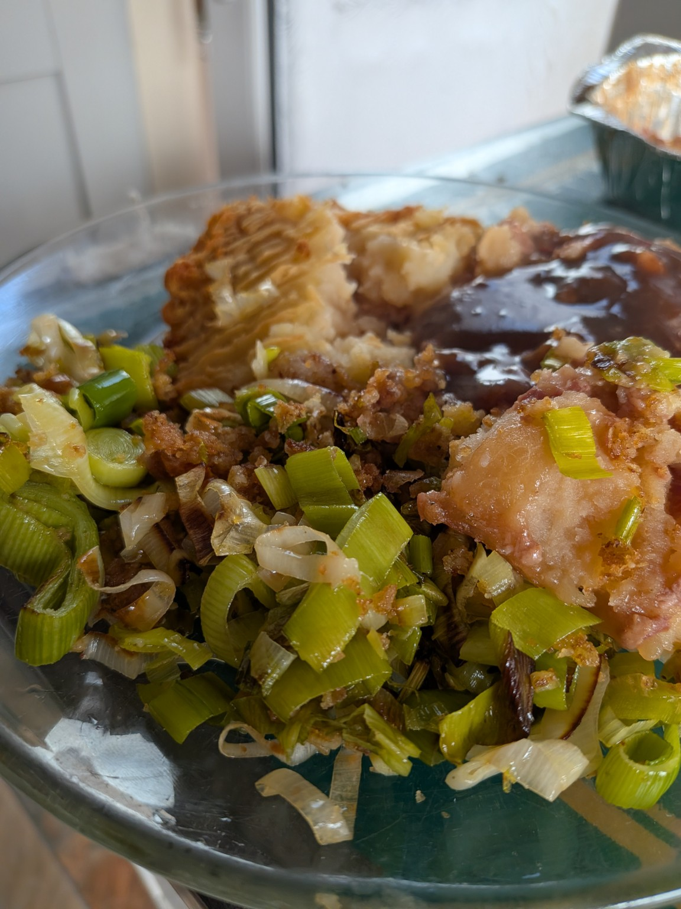

Crispy Parmesan Leeks with Gluten-Free Breadcrumbs
A quick and easy side dish made with buttery leeks, crispy gluten-free breadcrumbs and Parmesan cheese.

Ingredients
- Leeks, sliced
- Butter
- Gluten-free breadcrumbs
- Parmesan cheese, grated
Method
- Melt a little butter in a frying pan and cook the sliced leeks until softened.
- Add the gluten-free breadcrumbs and stir until crispy.
- Add the grated Parmesan, stir everything together and serve.
For more gluten-free recipes and my IBS journey, visit IBS Girl.